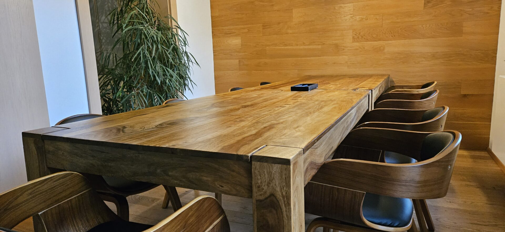
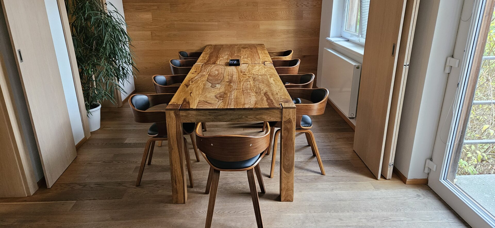

Nástupce nestačí jmenovat: Jak oddělit vlastnictví firmy od jejího řízení
Dobrý budoucí vlastník nemusí být nejlepším generálním ředitelem a schopný manažer nemusí být členem rodiny.

Advokátní kancelář AKKSP
Komplexní právní podpora pro firmy, podnikatele i jednotlivce. Srozumitelně, spolehlivě a s důrazem na praktická řešení.
TřinecPrahaKrakov
let zkušeností v právním poradenství
členný tým odborníků
jedna kancelář, široké možnosti
srozumitelná, efektivní a s důrazem na výsledek
02 · Oblasti naší právní pomoci
Široké spektrum právních služeb pro firmy a podnikatele.
Pomůžeme vám
Pomůžeme vám
Pomůžeme vám
Pomůžeme vám
Pomůžeme vám
Pomůžeme vám
Pomůžeme vám
Pomůžeme vám
Pomůžeme vám
03 · Lidé
Zkušení advokáti, kteří rozumí podnikání i životním situacím v Česku a Polsku.
04 · Reference
Důvěra našich klientů je pro nás největší motivací. Přinášíme několik vybraných referencí.
Během naší spolupráce jsme se opakovaně setkali s vysoce profesionálním přístupem, odbornou erudicí a spolehlivostí.
Chtěla bych tímto velmi poděkovat paní advokátce Mgr. Dorotě Filipczyk za poskytnuté služby při likvidaci obchodní společnosti v Polsku.


05 · Vzdělávání
Přinášíme praktické znalosti z oblasti práva pro firmy i jednotlivce.
Zobrazit nabídku školeníDobrý budoucí vlastník nemusí být nejlepším generálním ředitelem a schopný manažer nemusí být členem rodiny.

Vlastník firmy obvykle dokáže přesně popsat zákazníky, výrobní procesy i finanční plán.

Předání firmy patří k nejdůležitějším rozhodnutím v životě podnikatele.